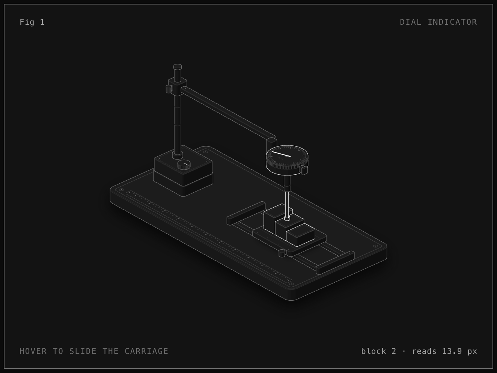
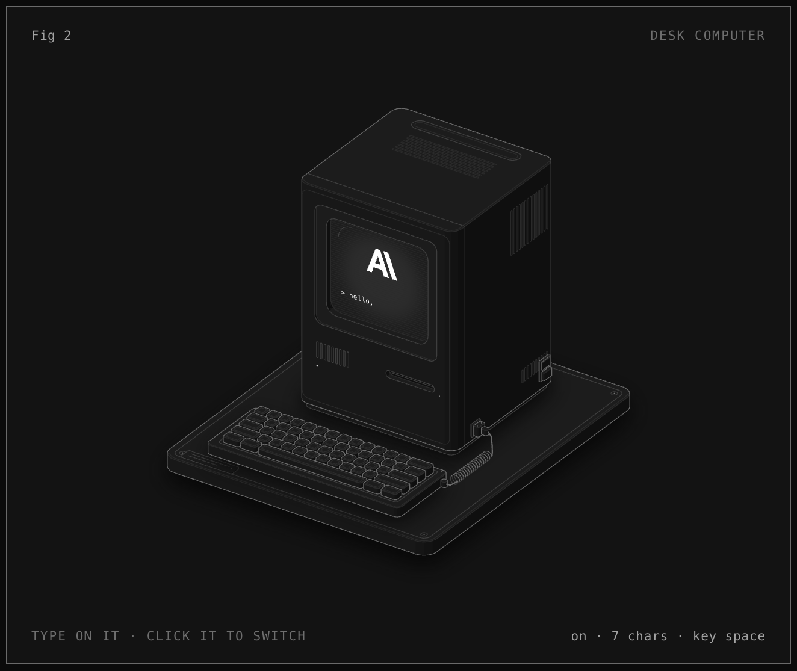
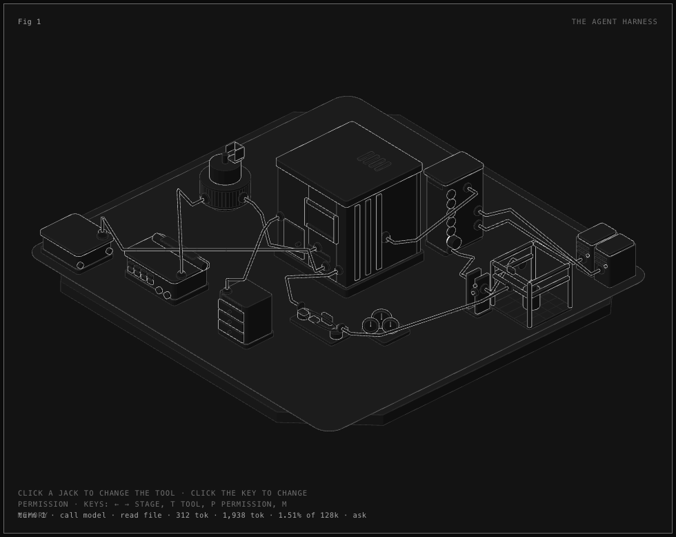
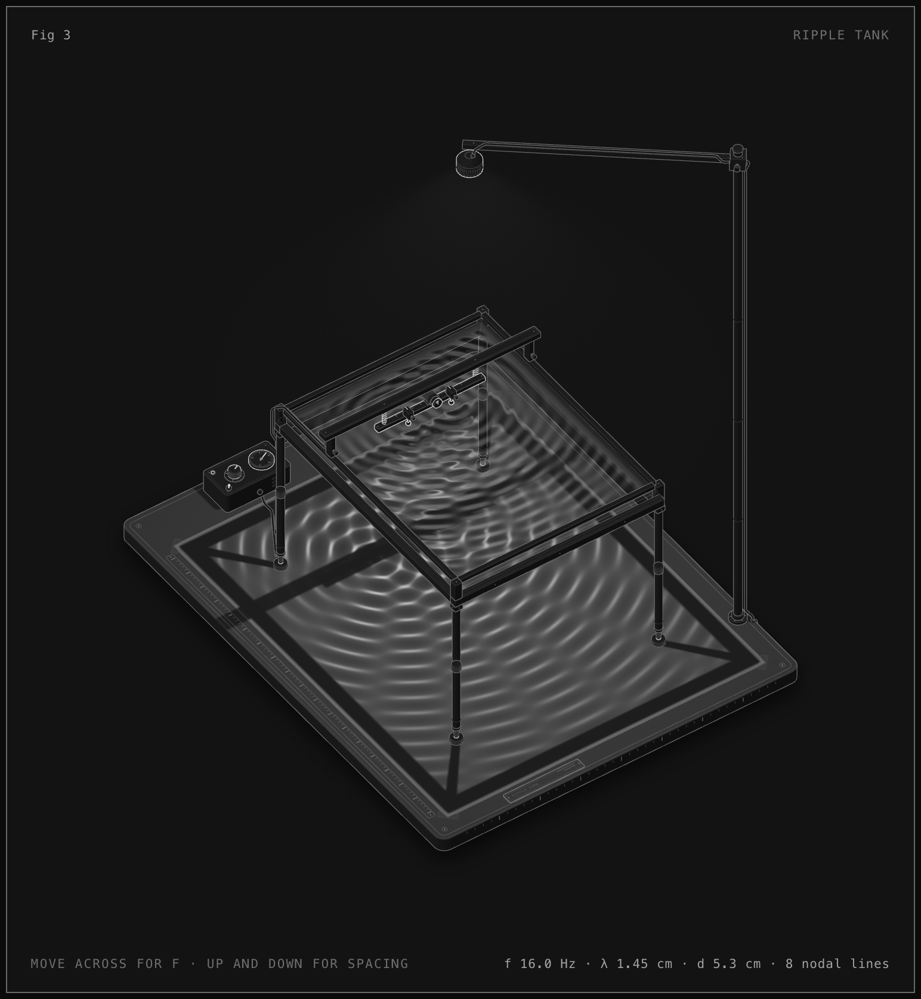

用真实机器解释抽象概念 —— 手工打造的高细节等距 SVG 技术插图，可交互、有实时读数、支持 WebGL 着色器。

最小的示例（~300 行）。滑座移动，量表指针实时读数。约 40 个实体零件。

1984 风格桌面电脑，键盘可直接输入。输入的字符出现在 CRT 屏幕平面上，关机后画面塌缩成一条线和一点。约 85 个实体。

模型外面那圈机械：终端打字、鼓里装配上下文、中央密封舱是黑箱模型、面板是工具、闸门是权限、笼子里工具真跑、远处两台是 MCP 服务器。读数全部来自同一份真值模型。约 175 个实体。

教学用波动槽，44° 俯视。两层 WebGL（灯光/焦散、水面反射）由纯色散与光学模型驱动，频率变化从振子向外传播。
来源：github.com/wheresryan22/anatomy · MIT License © 2026 Ryan
本地使用：在 OpenClaw 中说 /anatomy 解释一下 xxx 原理，做成可交互的图
/anatomy 解释一下 xxx 原理，做成可交互的图